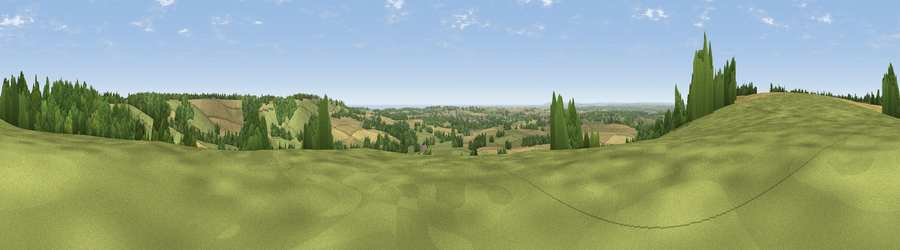

Viewpoint near Brabourne
#6221 in England · top 15% of its area beats it · near BrabourneThe view, rendered

A 360° render of this exact spot computed from the terrain model, tree cover and land cover — summer colours, afternoon light, calibrated against photographs of famous viewpoints. Real trees, hedges and buildings will differ in detail.
The panorama
Grey silhouette: terrain skyline in each direction (720 bearings, Earth curvature and refraction included). Dashed green: skyline with trees (+15 m) and buildings (+8 m) as obstacles. Blue strip: how far the ground is visible on each bearing.
Where the view opens
Wedge length = distance to the farthest visible ground on that bearing (vegetation-aware). Rings at 10, 25 and 50 km.
What fills the view
44% grassland · 31% cropland · 22% woodland · 2% water · 1% built-up
Angular shares of the visible panorama (visual magnitude), not map area. Landscape diversity 0.52 (0–1 Shannon).
Key numbers
More beautiful places nearby
The staircase of upgrades: each row has a higher view potential than everything closer. Driving times are estimates from straight-line distance, calibrated against real road routing — check an actual route before setting out.
| Place | Direction | Drive | Score |
|---|---|---|---|
| Viewpoint near Brabourne | WNW · 1 km | ~2 min | 71.9 |
| Tolsford Hill | SE · 6 km | ~12 min | 77.9 |
| Viewpoint near Capel-le-Ferne | ESE · 13 km | ~24 min | 80.2 |
| Viewpoint near Willingdon | SW · 67 km | ~90 min | 83.4 |
| Wilmington Hill | WSW · 68 km | ~92 min | 85.4 |
| Viewpoint near Alciston | WSW · 72 km | ~96 min | 86.8 |
| Firle Beacon | WSW · 72 km | ~96 min | 88.9 |
| Viewpoint near Niton | WSW · 174 km | ~195 min | 89.2 |
51.13962, 1.01882 · source: screening · position refined by local search. Computed location — check access rights before visiting.